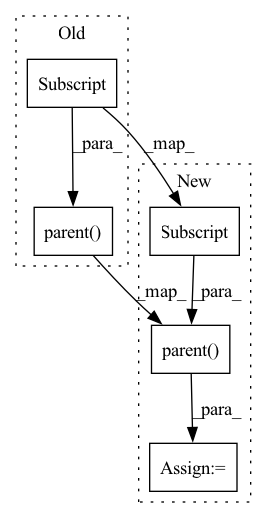

Pattern ID :7838
Before Change
def load_body(filename, group_name):
body = cmds.file(filename, i=True, rnn=True)
cmds.parent(body[0] , group_name)
return body[0]
def run_sim(garment, body):After Change
def load_body(filename, group_name):
body = cmds.file(filename, i=True, rnn=True)
body = cmds.parent(body[0] , group_name)
return body[0]
def run_sim(garment, body, experiment):In pattern: SUPERPATTERN
Frequency: 3
Non-data size: 5
Instances Fragment ID: 28036152
Project Name: maria-korosteleva/garment-pattern-estimation
Commit Name: bdd232cd7381fc080ca2f821ff4308188509310f
Time: 2020-04-09
Author: maria@korosteleva.com
File Name: data_generation/mayamain.py
M Class Name: AnonimousClass
N Class Name: AnonimousClass
M Method Name: load_body(2)
N Method Name: load_body(2)
M Parent Class:
N Parent Class:
M File Name: data_generation/mayamain.py
N File Name: data_generation/mayamain.py
M Start Line: 155
M End Line: 155
N Start Line: 152
N End Line: 152
Before Change
// Ensure the body is not entirely sleek
qw.setColliderFriction(collider, 0.5)
// organize object tree
cmds.parent( collider, self.MayaObjects["pattern"] )
def clean(self, delete=False):
Hides/removes the garment from Maya scene
NOTE all of the maya ids assosiated with the garment become invalidated, After Change
// apply current friction settings
qw.setColliderFriction(collider, self.config["body_friction"])
// organize object tree
collider = cmds.parent( collider, self.MayaObjects["pattern"] )
self.MayaObjects["colliders"].append(collider)
def clean(self, delete=False):
Hides/removes the garment from Maya scene Fragment ID: 28036147
Project Name: maria-korosteleva/garment-pattern-estimation
Commit Name: 13bf00b01e8f344ad29ab76455ef37b2c5df2f94
Time: 2020-05-29
Author: mariako@kaist.ac.kr
File Name: data_generation/mayaqltools/mayascene.py
M Class Name: MayaGarment
N Class Name: MayaGarment
M Method Name: add_colliders(2)
N Method Name: add_colliders(2)
M Parent Class: core.ParametrizedPattern
N Parent Class: core.ParametrizedPattern
M File Name: data_generation/mayaqltools/mayascene.py
N File Name: data_generation/mayaqltools/mayascene.py
M Start Line: 118
M End Line: 125
N Start Line: 129
N End Line: 140
Before Change
stitch["maya"] = stitch_id
stitches.append(stitch_id)
cmds.parent( stitches, self.pattern["maya"] )
return self._find_qlcloth_object()
def _maya_curve_name(self, address):After Change
// TODO add support for multiple "to" components
to_curve = self._maya_curve_name(stitch["to"])
stitch_id = qw.qlCreateSeam(from_curve, to_curve)
stitch_id = cmds.parent( stitch_id, self.pattern["maya"] ) // organization
stitch["maya"] = stitch_id[0]
return self._find_qlcloth_object() Fragment ID: 28036150
Project Name: maria-korosteleva/garment-pattern-estimation
Commit Name: bdd232cd7381fc080ca2f821ff4308188509310f
Time: 2020-04-09
Author: maria@korosteleva.com
File Name: data_generation/mayamain.py
M Class Name: MayaPattern
N Class Name: MayaPattern
M Method Name: stitch_panels(1)
N Method Name: stitch_panels(1)
M Parent Class: core.BasicPattern
N Parent Class: core.BasicPattern
M File Name: data_generation/mayamain.py
N File Name: data_generation/mayamain.py
M Start Line: 123
M End Line: 132
N Start Line: 127
N End Line: 129